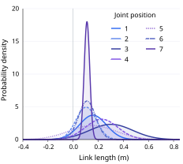

Link-pose supervision makes the difference.
Removing link-pose reconstruction drops EmbodiBench success from 23.27% to 5.33%, a 17.94 percentage-point decrease, despite retaining morphology conditioning.
Full model23.27
Without link poses5.33
Scaling Robot Morphology Representations
for Cross-Embodiment Action Prediction
The same joint configuration can produce different link poses on different robots. RoboMorpher connects control coordinates to their spatial effects through a morphology-conditioned action tokenizer.
Pretrained using robot kinematics, it learns discrete codes that reconstruct both joint angles and link poses. A vision–language–action policy predicts these codes, then refines them into continuous trajectories.
morphology–state pairs
joints per generated arm
shared RVQ codebooks
frames per action chunk
Survey-guided robot descriptions with forward-kinematics supervision.
Joint-aligned discrete codes, conditioned on the robot’s morphology.
Discrete action prediction followed by continuous trajectory refinement.
From a survey of 33 robot descriptions to generated six- and seven-joint arms. A common local-Z convention makes kinematics usable across different joint frames and link geometries.
Position-specific link-length priors guide sampling. Collision-aware inverse kinematics filters home poses, and forward kinematics supplies joint-aligned pose targets.

Three stages connect procedural kinematics to language-conditioned control. Explore the pipeline below.
Normalize serial-arm chains to a shared local-Z convention, sample new morphologies, and pair configurations with forward-kinematics targets. No manipulation demonstrations are needed for tokenizer pretraining.
Two discrete indices per valid joint preserve control coordinates alongside child-link position and orientation. Morphology-conditioned decoding allows the same code to represent different joint values on different robots.
Ten fitted trajectory nodes become a 50-frame chunk. Eight MaskGIT iterations predict codes; four Euler steps refine the decoded trajectory through a flow-matching branch.
Ten tabletop tasks across 30 generated URDFs in SAPIEN. Single-arm and same-side or opposite-side dual-arm setups test lifting, picking, pushing, and stacking.
SS: same-side dual-arm · OS: opposite-side dual-arm. These keyframes illustrate task execution from saved trajectories and are separate from learned-policy evaluation.
RoboMorpher achieves the highest mean success among the evaluated joint-space methods. Each benchmark uses 1,500 trials per method.
+9.73 pp over continuous joint control
+15.34 pp over continuous joint control
Mean task success rate (%) ↑
| Method | RoboTwin 2.0 | EmbodiBench |
|---|
StarVLA (EE) is a separate end-effector control reference. It achieves higher mean success on both benchmarks; the control interface differs.
Removing link-pose reconstruction drops EmbodiBench success from 23.27% to 5.33%, a 17.94 percentage-point decrease, despite retaining morphology conditioning.
EmbodiBench lifting success averages 55.11%, versus 14.00% for continuous joint control. The three lifting tasks account for about 80% of the overall improvement.
All three EmbodiBench stacking tasks remain at 0% for RoboMorpher.
These experiments do not establish held-out-morphology transfer, empirical scaling trends, or variability across training seeds. Stacking and reconstruction outliers remain unresolved. See the paper for evaluation details and limitations.
Full method, experiments, and implementation details.